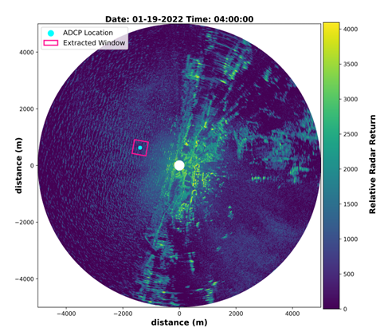
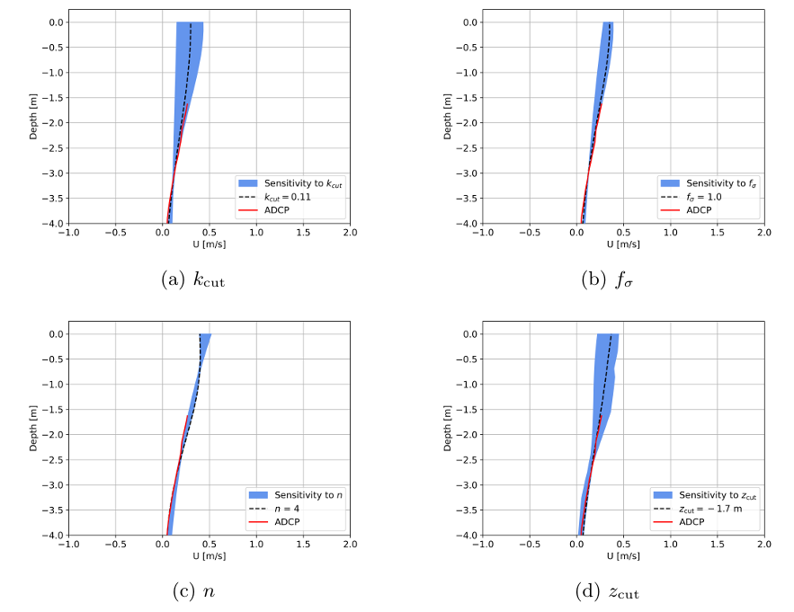
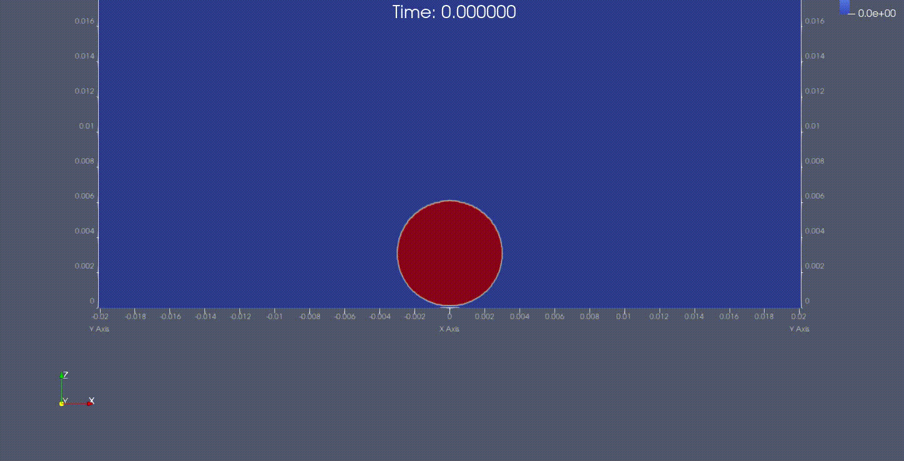
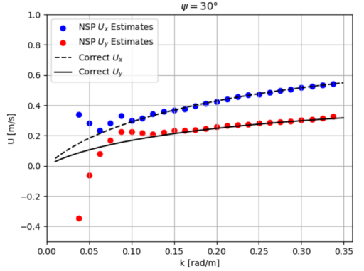

Research
I have had the opportunity to be involved in numerous research projects. This page summarises the research conducted. Click the titles for brief summaries. For a more in depth project description follow the links to their respective GitHub repositories.
Click here to read the Preprint.
Please see the Presentation Section to view my EFDC2 conference presentation as part of this research.
Brief Description:
Following on from my final year thesis I was given the opportunity to continue the research in my spare time in order to produce an improved method
for finding upper layer ocean currents in stormy data periods. Previously inversion algorithms focused on the currents deeper in the water column. In this
study we focused on the upper layer of the ocean. In particular, this study uses a smoothing technique along with in-situ measurements at lower depths to infer the
current profile up to the mean sea level. The method was applied to radar images collected during a storm event where concurrent measurements of an ADCP were available.
The method also performs well without the use of in-situ measurements at lower depths, though accuracy improves when such data is available to stabilize the solution.
Skills: Python, Oceanography, Mann-Whitney U test, Parameter Sensitivity.

Fig. 1: An example radar image from which the current is inferred.

Fig. 2: Shows the sensitivity of the inversion algorithm to various parameters in our model.
Click here to read the full report. The code for this
project is available at GitHub
Brief Description:
During my summer research internship at UCD I worked under Lennon Ó'Náraigh on Computational Fluid Dynamics (CFD) modelling of droplet impacts. The project
aimed to improve the accuracy of 3D simulations by implementing a dynamic treatment of the contact angle. We validated predictions against experimental data
captured using a high-speed camera. This project gave me insight into C++ and MatLab for simulation setup and edge detection respectively. I was given access
to the High Performance Computer in UCD to perform simulations.
Skills: Linux, C++, High Performance Computing, Mathematical Modelling.

Fig. 3: Water droplet impact experimental video using high-speed camera.

Fig. 4: Water droplet impact simulation following computational methods to solve the Navier-Stokes equations. This case shows the 2D version which can be easily extended to 3D as this problem is axisymmetric.
Click here to read the full report.
Brief Description:
My final year thesis involved using radar images to predict ocean currents. In this work I first used simulated ocean waves to compare existing methods
such as the least squares method, normalized scalar product method (NSP) or polar current shell method. I also compared existing inversion methods like the
Effective Depth Method (EDM) or the newly introduced Polynomial Effective Depth Method (PEDM). I used these numerical algorithms in Python and MATLAB to successfully
find the depth dependent ocean current from simulated data. I was then given access to large radar image datasets from the Mediterranean Sea in HDF5 format. Using
various fitting techniques and error propagation we identified a limitation of the newly introduced algorithm in cases of high shear currents.
Skills: Python, MatLab, big data, statistical methods.

Fig. 5: Doppler shifts c(k) separated into their x and y components from the NSP method on the simulated data.
Get in touch at josephanderson7180@gmail.com